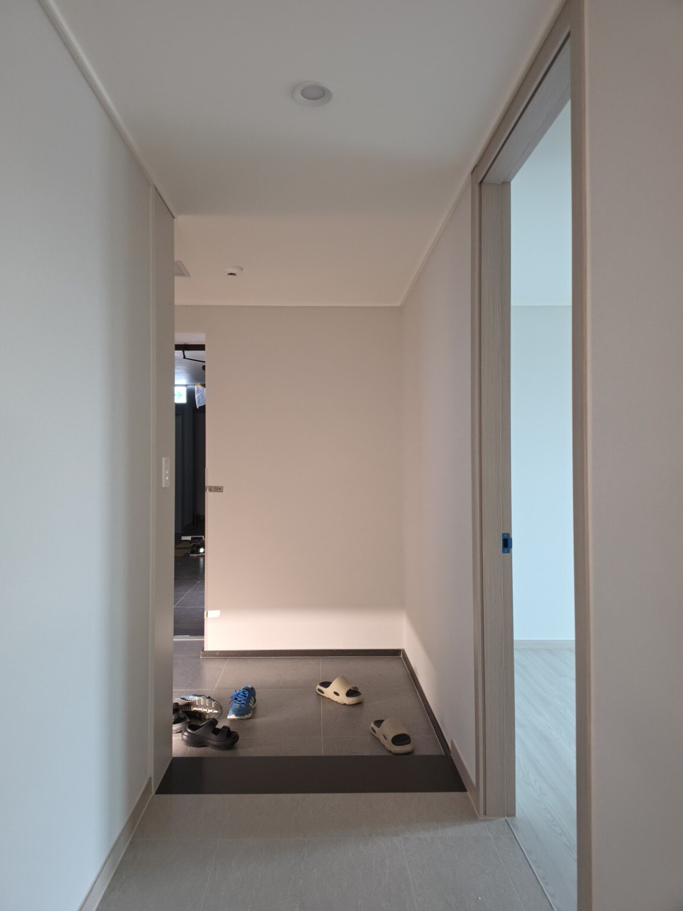
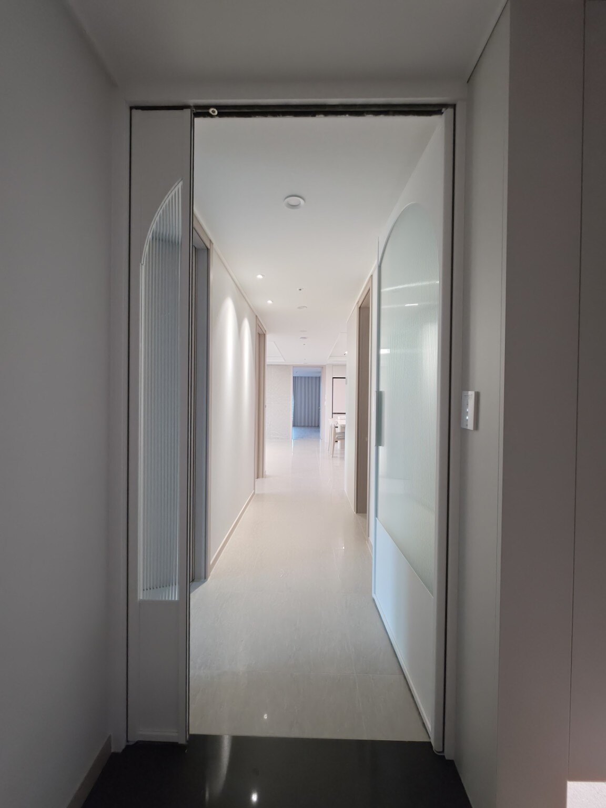
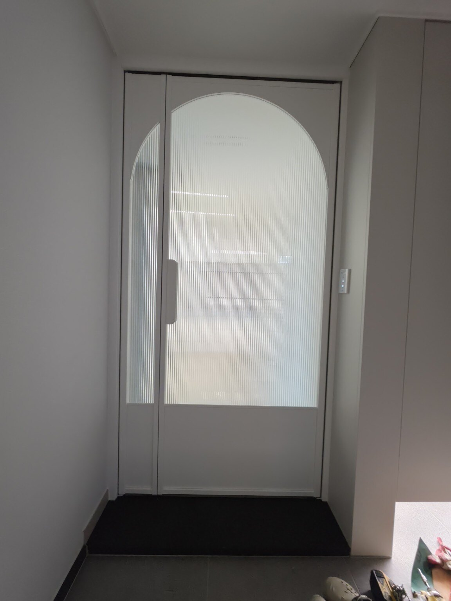
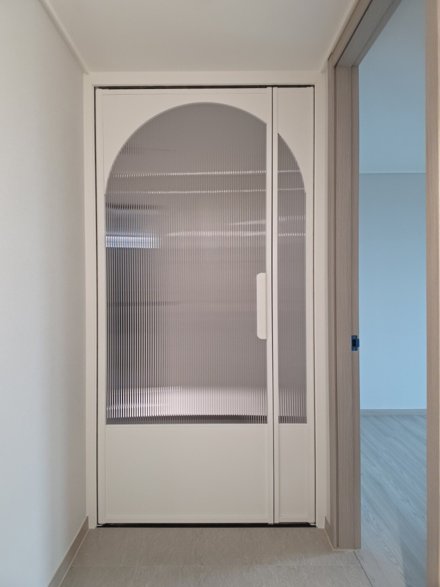
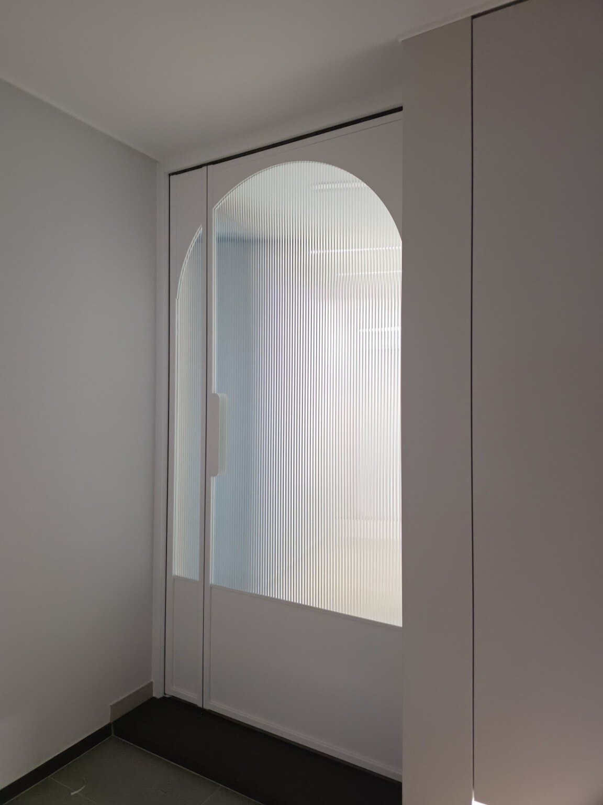
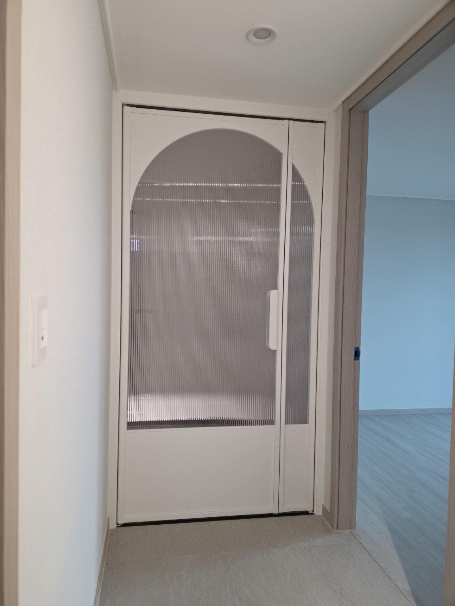
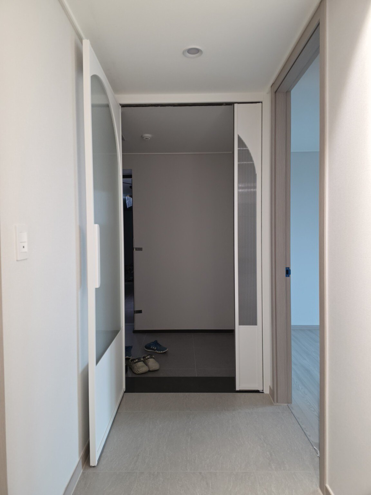
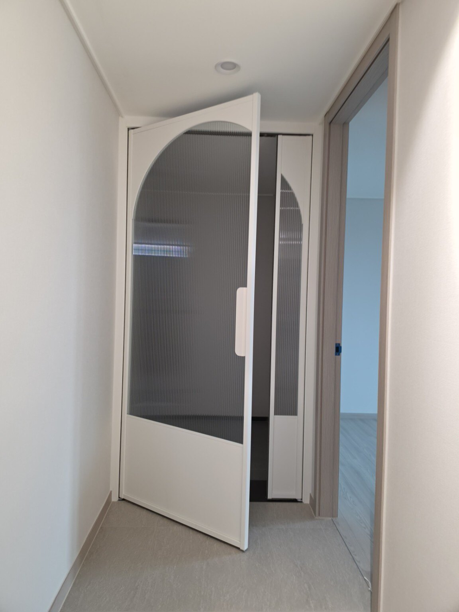

문다라는 2003년부터 현관중문을 직접 제작·시공해 온 전문 업체입니다.
서울·경기 지역을 중심으로 현장에 맞는 중문을 정성껏 시공합니다.
같은 공간이 문다라 중문 시공으로 어떻게 달라지는지 확인해보세요.
기존에 중문이 없던 현관 공간에 화이트 컬러의 아치형 중문을 설치한 시공 사례입니다. 세로 패턴 유리를 적용해 개방감은 살리면서 현관과 실내 공간을 자연스럽게 분리했습니다.
현장 구조에 맞춰 고정창과 여닫이문을 구성하여 공간 활용도를 높였으며, 깔끔한 화이트 프레임으로 기존 인테리어와 자연스럽게 어울리도록 시공했습니다.
시공지역 : 경기 지역
시공형태 : 아치형 여닫이 중문 + 고정창







